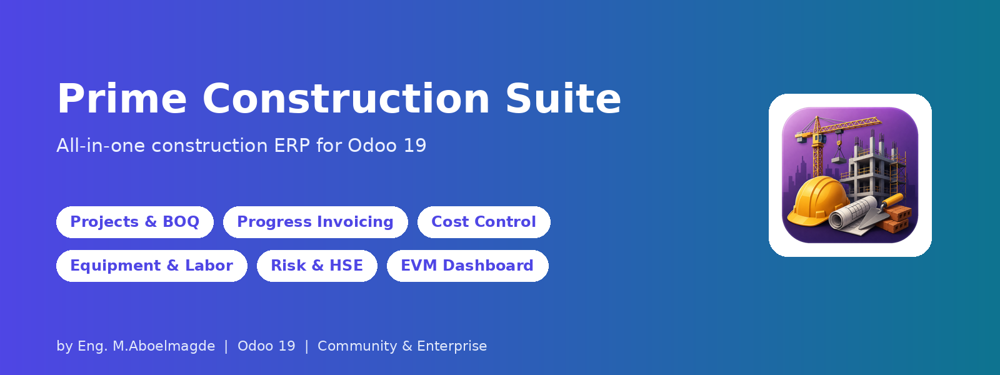
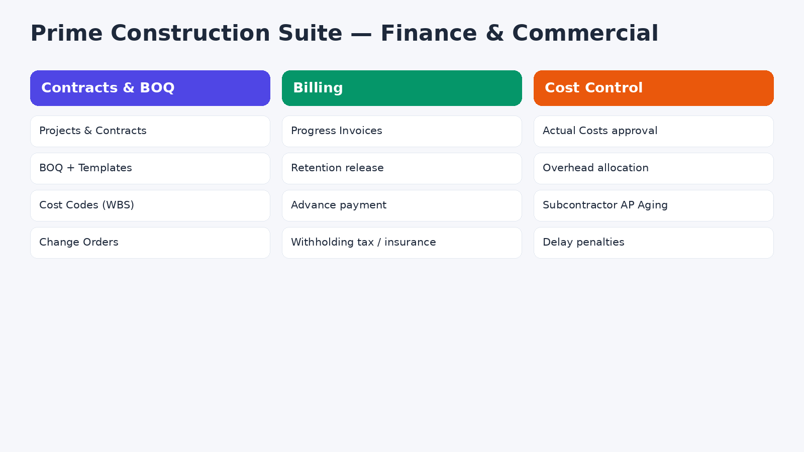
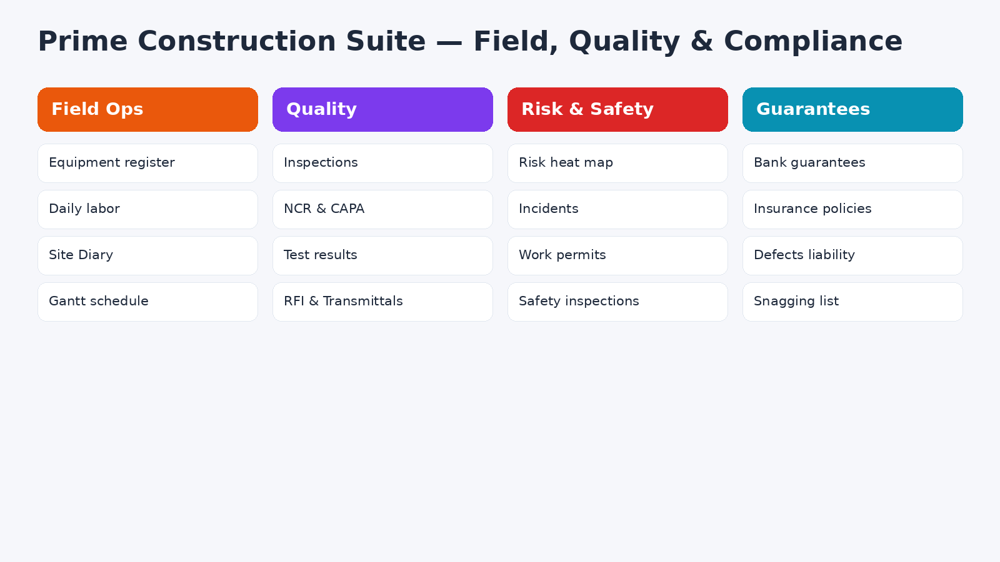
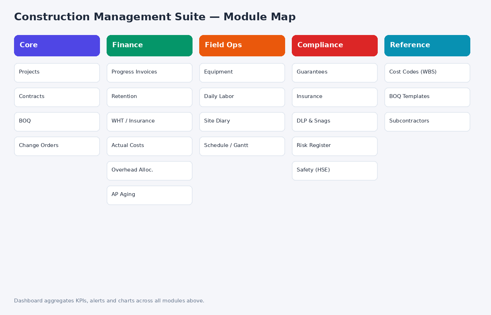
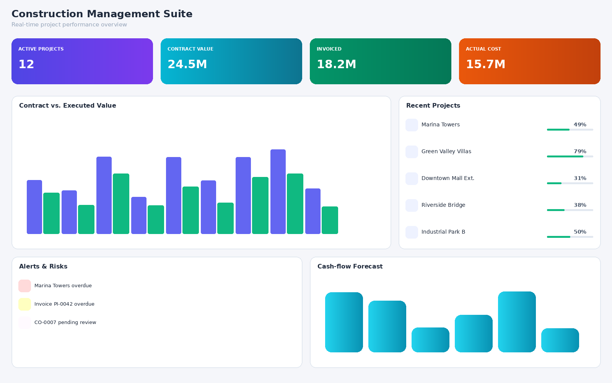
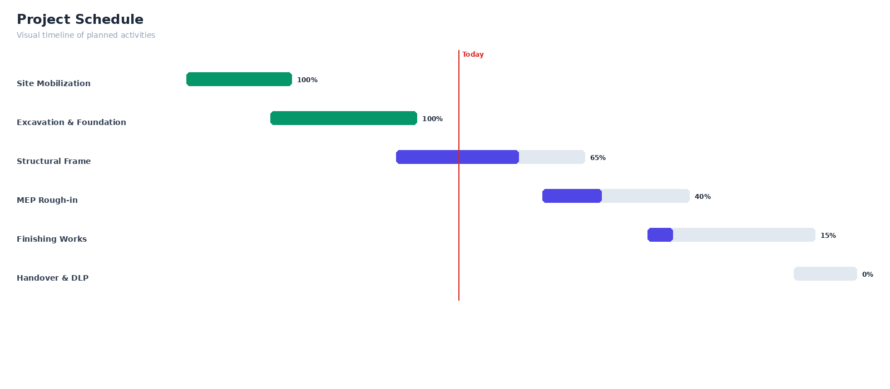
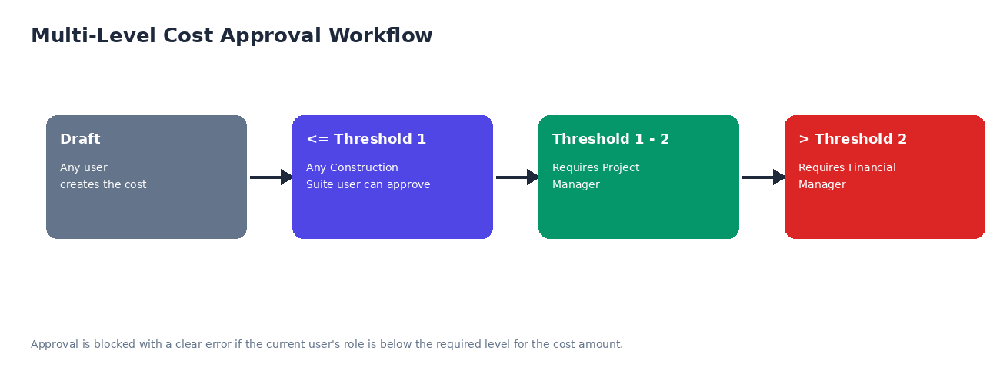
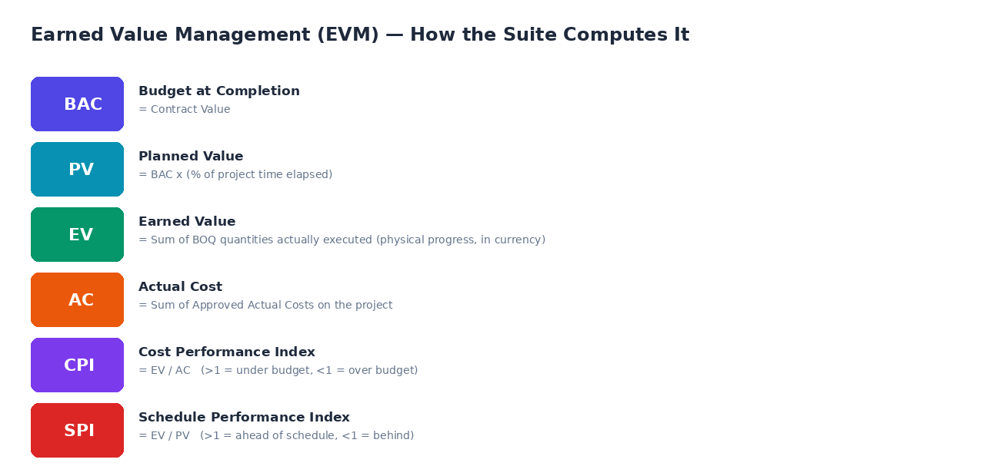

KPIs, contract vs executed value, alerts and cash-flow forecast in one screen.




xlsxwriter (Excel export), openpyxl (Excel import), reportlab (PDF reports). A clear message is shown if one is missing.Free bug-fix updates. Installation and customization support available: Eng. M.Aboelmagde (Odoo Lab on YouTube: @odoolab).